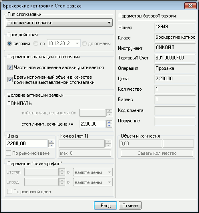

Ввод заявки «по исполнению»
Ввод заявки «по исполнению» осуществляется выбором в Таблице заявок пункта контекстного меню «Стоп-заявка «по
исполнению»». В окне ввода заявки слева расположены поля для ввода параметров
заявки «по исполнению», а справа – параметры заявки-условия.

Значения параметров заявки «по исполнению»:
- «Тип стоп-заявки» – выбор типа заявки:«Стоп-лимит по
заявке», «Тэйк-профит и стоп-лимит по заявке» или «Тэйк-профит по заявке» (см.
Описание типов ).
- «Срок действия» – определяет срок действия заявки. Доступно значение «Сегодня».
- «Параметры активации стоп-заявки» определяют поведение заявки «по
исполнению» в случае исполнения заявки-условия:
- «Частичное исполнение заявки учитывается» – означает, что заявка
«по исполнению» активируется при частичном исполнении заявки-условия. Если
флажок снят, то заявка «по исполнению» активируется только при полном
исполнении заявки-условия.
- «Брать исполненный объем заявки в
качестве количества выставляемой стоп-заявки» – в качестве количества инструментов в заявке
«по исполнению» принимается исполненный объем заявки-условия. Если флажок
снят, то объем заявки указывается явно, в поле «Количество».
- Если установлены оба флажка, то при
частичном исполнении заявки-условия происходит активация заявки «по исполнению»
с указанием количества инструментов, равным объему исполненной части заявки-условия.
При дальнейшем исполнении заявки-условия происходит увеличение объема заявки «по
исполнению». При этом, в зависимости от движения цен на рынке, возможно
наступление условий исполнения заявки «по исполнению» для активированного
объема, а затем снова может происходить увеличение активированного объема в
результате следующего частичного исполнения заявки-условия.
- «Условие активации стоп-заявки» – определяет значение
стоп-цены и направленность заявки.
- «Цена» – цена заявки, за единицу инструмента.
- «По рыночной цене» - признак исполнения стоп-заявки
по рыночной цене. Параметр заявок типа «Тэйк-профит и стоп-лимит по заявке».
- В некоторых режимах торгов использование рыночных
заявок не предусмотрено.
- «Кол-во (лот= …)» – количество инструментов в
заявке, в лотах. В скобках указано количество единиц выбранного инструмента в одном лоте. Параметр недоступен,
если установлен флажок «Брать исполненный объем заявки в качестве количества
выставляемой стоп-заявки».
- «Параметры «take profit» - параметры заявки типа «Тэйк-профит по заявке»:
- «Отступ» – устанавливает значение
отступа от максимума (на продажу) или минимума (на покупку) цены
последней сделки, при достижении которого генерируется лимитированная заявка.
Значение отступа указывается в виде отклонения цены или в процентах.
-
«Спред» – устанавливает дополнительное (опережающее) отклонение цены заявки от цены
последней сделки, инициировавшей заявку. Защитный спред предназначен для
того, чтобы установить цену создаваемой заявки заведомо исполнимой.
- «По рыночной цене» - признак исполнения тэйк-профита по
рыночной цене. Значение параметра «Защитный спред» в данном случае
не используется. Параметр заявок типа «Тэйк-профит и стоп-лимит по
заявке».
- В некоторых режимах торгов использование рыночных
заявок не предусмотрено.
- «Объем и комиссия» - оценка заявки в денежном выражении. Позволяет рассчитать «Количество» инструментов в заявке по известной сумме денег. Для этого нужно ввести в поле «Объем» сумму денежных средств и нажать кнопку «Задать количество». При этом в поле «Количество» выводится число, полученное в результате пересчета и округленное вниз до ближайшего целого, а в поле «Объем» – денежная оценка заявки при данном «Количестве»,
Сумма брокерской комиссии с объема заявки рассчитывается автоматически в соответствии с установленным алгоритмом и выводится в поле справа.
Значения параметров заявки-условия:
- «Номер» – регистрационный номер заявки-условия в торговой системе биржи,
- «Класс» – наименование класса в торговой системе, к которому относится
инструмент,
- «Инструмент» – наименование инструмента, указанного в заявке,
- «Торговый счет» – код счета, в отношении которого совершается операция (с соблюдением регистра символов),
- «Операция» – направленность операции заявки-условия,
- «Цена» – цена заявки-условия, за единицу инструмента,
- «Количество» – количество инструментов в заявке, в лотах,
- «Баланс» – исполненная часть заявки-условия, в лотах,
- «Код клиента» – идентификатор клиента в системе QUIK,
- «Поручение» – текстовый комментарий к заявке.
См. также: